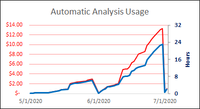
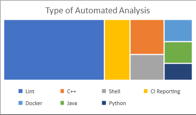
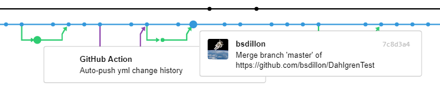

GitHub offers a mechanism for automated analysis, testing, and related quality checks.
These "actions" can track data on the health of the project and generate updated metrics
regularly. Unless otherwise stated, the data is updated as automatically triggered by
a related trigger. For example, Code Inspector processes the code on a daily basis and
the badge below is the result from the last scan. Some of the data is generated only
when test files are updated, others when the test runs.
Current statistics on the use of these actions is shown in the two graphics below. These
were LAST UPDATED 7/2/2020. The data shows that we are generating several working
days worth of automated actions at a cost of very few dollars. This graph is in actual dollars
NOT thousands. The GitHub site offers up to 3000 minutes (~6 working days) for "free".
The cost of minutes above that follows these numbers.

The other grahic shows the relative frequency of uses. More than half of the actions are used
for "lint"-ing. Lint-ers are static analysis tools that focus on syntax-level reviews of the
source code. Frequent checks on Lint results helps to maintain a basic level of uniformity in
the code style and format. Continuous Integration reporting is the next-most frequent use. CI
reporting provides OQE data from actions to support continuous-ATO, -Cert, etc. All the other
uses are investigations into basic testing in different languages. Up to this date, no
requirements-based testing has occurred.

The other metrics are the result of data pushed from a GitHub worklow. After performing some
test or other metric scan on the code, the results are pushed back to the repository by an
automatic action. In the repository's history, these short-lived branches are quite distinctive.
